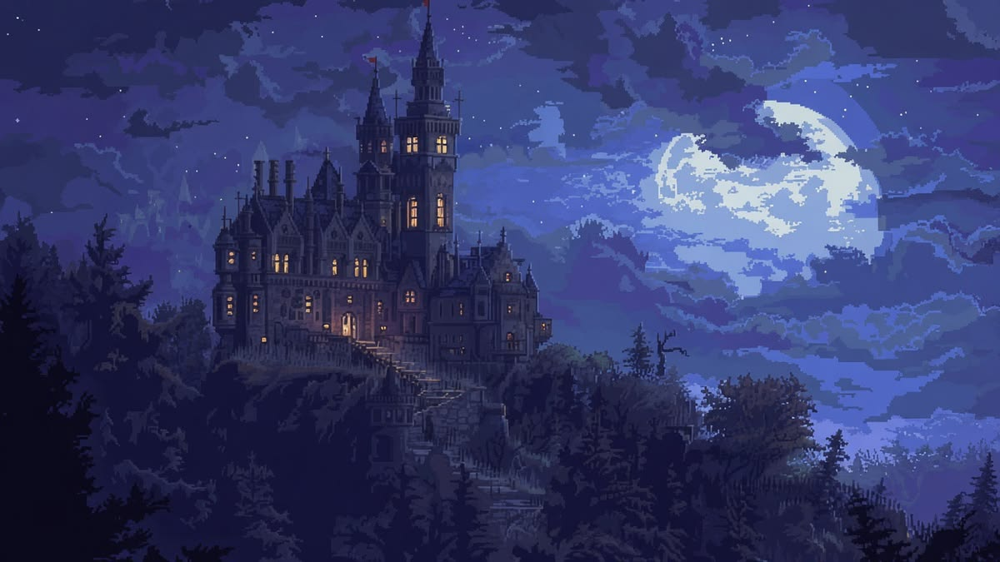
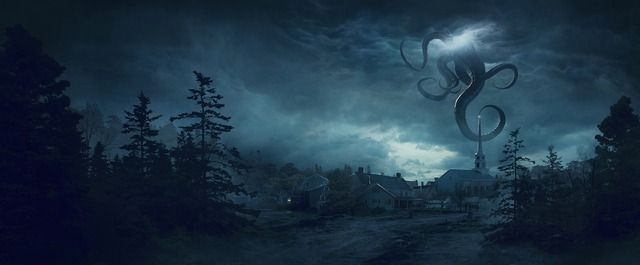
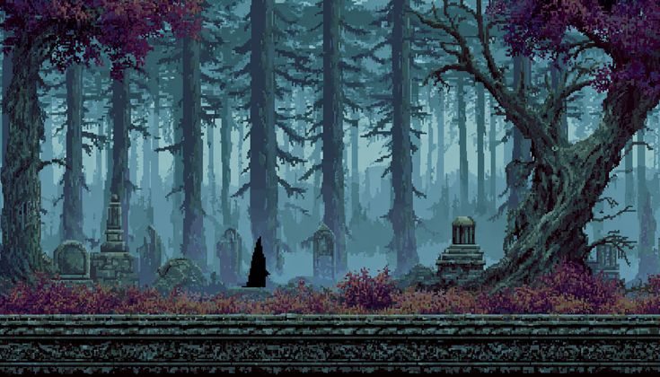
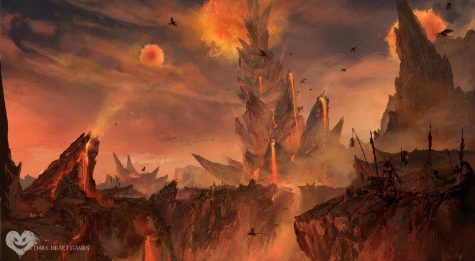
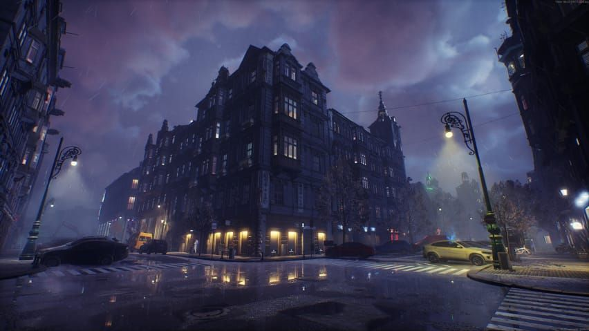

Sylkium
Os aventureiros atravessam terras desoladas onde os deuses definham e desaparecem, e o mal se infiltra em cada canto. Um mundo de autoria própria, onde a esperança é tão rara quanto o sagrado.
diário de uma mestre
Sou mestre de RPG e encontro nas minhas mesas um espaço para transformar estudo em narrativa, regra em experiência e imaginação em encontro.
Conheça meu jeito de mestrar01 / entre mundos
Eu utilizo o que aprendo nas minhas mesas para construir experiências mais cuidadosas, envolventes e vivas. Cada sessão é uma chance de testar ideias, observar pessoas criando juntas e descobrir novas formas de contar histórias.
Também trabalho com Foundry VTT, explorando suas ferramentas para preparar cenários, organizar campanhas e aproximar jogadores mesmo quando a aventura acontece à distância.
Meu hobby não fica separado do meu aprendizado: ele é onde estudo, experimento e compartilho tudo isso com outras pessoas.
Ver meus projetos no GitHub ↗02 / minhas mesas

Os aventureiros atravessam terras desoladas onde os deuses definham e desaparecem, e o mal se infiltra em cada canto. Um mundo de autoria própria, onde a esperança é tão rara quanto o sagrado.

No Velho Oeste, onde os personagens precisarão enfrentar um antigo inimigo e, para isso, firmar alianças improváveis — únicas capazes de deter uma corrupção que ameaça consumir tudo.

Na antiga Londres, pessoas marcadas por traumas, vivências dolorosas e um quê de loucura se veem obrigadas a desvendar os terrores de uma casa possivelmente assombrada — onde cada sombra pode ser real demais

Os aventureiros atravessam terras desoladas onde os deuses definham e desaparecem, e o mal se infiltra em cada canto. Um mundo de autoria própria, onde a esperança é tão rara quanto o sagrado.

Com a queda de Avernus, os aventureiros terão de enfrentar máquinas e criaturas infernais nos domínios de Zariel — um antigo anjo que aceitou se tornar a própria justiça no Inferno.

Esconder o monstro interior enquanto se luta contra a própria fome. Quando a corrupção se espalha entre aqueles a quem um dia juraram confiar, a máscara não pode — em circunstância alguma — ser quebrada.